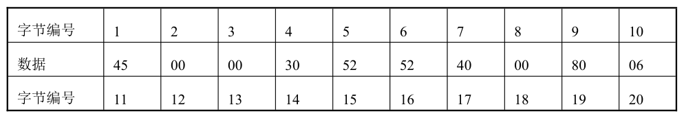
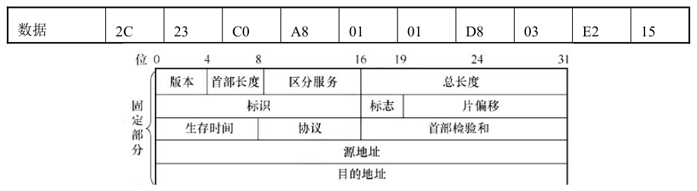
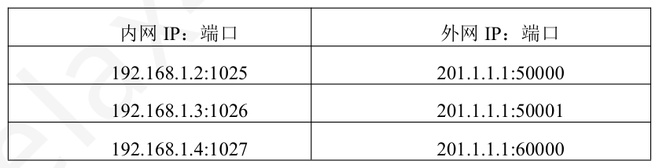
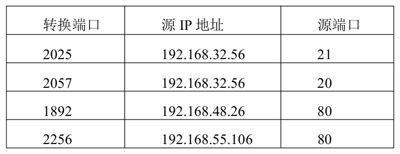
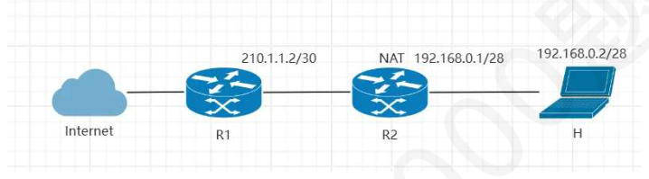

第 1 题
下列关于异构网络互连的说法中错误的是（ ）。
- A．异构网络互连，是指利用转发器、网桥等设备将一个网络扩大化。
- B．互联网可以由多种异构网络互连组成。
- C．异构网络互连需要考虑许多问题，例如不同的寻址方案、不同的网络接入机制等。
- D．借助IP 协议，可以屏蔽互连的各网络的具体异构细节。
答案与解析
答案：A
当中间设备是转发器或者网桥时，仅仅是把一个网络扩大了，而从网络层的角度看，这仍然是一个网络，一般不称之为网络互连。网络互连一般指利用路由器来进行互连和路由选择。
第 2 题
若主机A 向主机B 发送了三个IP 数据报P1, P2, P3，主机B 接收到的顺序可能是P1, P3, P2。这表明主机A 和主机B 之间的网络提供的是（ ）。
- A．电路交换服务
- B．数据报服务
- C．虚电路服务
- D．以上均不是
答案与解析
答案：B
电路交换是指在通信开始前，必须先建立一条专用的物理连接（电路）。一旦建立，所有数据都会沿着这条唯一的路径按序传输，就像打电话一样。因此，分组不可能失序。数据报服务不预先建立连接。每个数据包（数据报）都包含完整的源地址和目的地址，并由网络中的路由器独立选择路径进行转发。由于每个数据包的路径可能不同，经历的延迟也可能不同，因此它们到达目的地的顺序可能与发送顺序不一致。题中描述的P1, P3, P2 的到达顺序是数据报服务的典型特征。虚电路服务是介于电路交换和数据报之间的一种方式。它在数据传输前，会先通过一个连接建立过程，在源和目的主机之间建立一条逻辑连接（虚电路），而不是物理连接。一旦建立，该虚电路上所有的分组都会沿着这条预先确定的逻辑路径传输。因此，分组会按序到达。
第 3 题
下列关于虚电路网络的描述中，错误的是（ ）。
- A．在数据传输阶段，所有分组都沿着建立虚电路时确定的路径进行传输。
- B．需要为一条虚电路预留带宽等资源，以保证可靠传输。
- C．网络中的节点需要为每条经过它的虚电路维护一条记录。
- D．数据传输时，每个分组的首部不需要包含完整的源地址和目的地址。
答案与解析
答案：B
电路交换会为连接预留并独占带宽资源。而虚电路虽然路径固定，但其所经过的物理链路资源（如带宽）是由多条虚电路共享的，并不会为某一条虚电路预留专用带宽。
第 4 题
若网络层提供的是虚电路服务，那么当一条虚电路上的某个中间节点发生故障时，最直接的后果是（）。
- A．后续分组会自动选择其他路径绕行。
- B．只有当前正在该节点处理的分组会丢失。
- C．该虚电路被破坏，其上的所有通信都会中断。
- D．源主机会立即收到一个ICMP 差错报文。
答案与解析
答案：C
虚电路服务是网络层的一种面向连接的服务，它在数据传输前通过所有中间节点预先建立一条固定的逻辑连接（即虚电路）。该电路上所有分组都按相同的路径转发。如果路径上的某个中间节点发生故障，则该虚电路被破坏，这条通路上所有的后续通信都会因此中断，故C 正确。
第 5 题
从资源分配的角度看，电路交换、虚电路交换和数据报交换的主要区别在于（ ）。
- A．电路交换不分配资源，后两者分配资源。
- B．三者都动态分配资源。
- C．电路交换在通信期间独占资源，虚电路在建立时预分配资源，数据报动态共享资源。
- D．电路交换和虚电路独占资源，数据报共享资源。
答案与解析
答案：C
从资源分配的角度，电路交换在建立连接时分配，通信期间独占。在通话或数据传输开始前，网络会分配一条专用的物理通路，其带宽等资源在整个通信期间被该连接独占，即使没有数据在传输，资源也无法被其他用户使用。虚电路在建立连接时预分配逻辑资源，数据传输时动态共享物理资源。在连接建立阶段，会分配虚电路号（VCI）并在沿途节点创建转发表项，这可以看作是“预分配资源”。但在数据传输阶段，物理链路的带宽等资源是由多条虚电路动态共享的，并非独占。数据报不预分配，完全动态共享。没有连接建立过程。每个数据报在到达路由器时，才临时动态地请求和使用转发所需的资源（缓存、处理等）。资源是在“逐个分组”的基础上进行分配和共享的。
第 6 题
在软件定义网络（SDN）体系结构中，上层网络应用用于向SDN 控制器指定网络策略和需求的接口通常被称为？
- A．东向接口
- B．南向接口
- C．西向接口
- D．北向接口
答案与解析
答案：D
北向接口(NBI)允许网络应用和业务逻辑向SDN控制器表达其网络需求和策略。南向接口(SBI)用于控制器与数据平面设备通信。东/西向接口用于分布式控制器间的通信。
第 7 题
在SDN 体系结构中，SDN 控制器主要负责以下哪项功能？
- A．根据流表规则直接转发用户数据包
- B．执行网络应用程序定义的业务逻辑
- C．维护全网的拓扑视图并计算路由、生成流表下发给交换机
- D．物理层信号的编码与解码
答案与解析
答案：C
SDN控制器负责维护网络状态信息（如拓扑），根据全局网络视图进行路由计算、策略决策，并将这些决策转化为流表规则下发给数据平面的交换机。A 是数据平面设备的功能。B是应用平面的功能，应用平面通过北向接口与控制器交互。D 是物理层的功能。
第 8 题
在SDN 体系中，数据平面中的SDN 交换机的主要任务是（ ）。
- A．发现网络拓扑和链路状态
- B．根据SDN 控制器下发的流表对数据包进行匹配和处理
- C．运行复杂的网络应用程序
- D．路由选择和分组转发
答案与解析
答案：B
数据平面的SDN 交换机主要负责基于控制器下发的流表（Flow Table）进行高效的数据包查找、匹配和转发（或其他处理动作如丢弃、修改）。它们是执行者，而非决策者。A 是控制平面的任务，C 是应用平面的任务，D 是非SDN 架构的传统网络中，路由器的作用。
第 9 题
以下项目，不包含在OpenFlow1.0 的流表中的有（ ）。 I．源MAC 地址II．VLAN IDIII．UDP 端口号IV．生存时间TTL
- A．仅IV
- B．I、IV
- C．I、II、III
- D．I、II、IV
答案与解析
答案：A
OpenFlow 流表是SDN（软件定义网络）中数据平面设备进行转发决策的依据，主要由匹配字段、动作和计数器三部分组成。其中，“匹配字段”是用来识别特定数据流的一组数据包头部字段。源MAC地址和VLAN ID 均属于数据链路层的头部字段。UDP端口号属于运输层的头部字段。生存时间TTL 每经过一个路由器就会减1。由于TTL 是一个动态变化的字段，不具备标识一条数据流的稳定性，因此不被用作流表的匹配字段。
第 10 题
下列关于拥塞控制和流量控制的叙述中，正确的是（ ）。
- A．流量控制和拥塞控制都属于网络层的核心功能。
- B．流量控制的目的是防止网络资源因数据量过大而过载。
- C．拥塞控制是端到端的问题，而流量控制是全局性问题。
- D．拥塞控制旨在防止整个网络过载，而流量控制旨在防止接收方不堪重负。
答案与解析
答案：D
拥塞控制与流量控制不同，流量控制往往是指在发送方和接收方之间的点对点通信进行控制，一般是抑制发送方发送数据的速率，防止接收方来不及接收。而拥塞控制是全局性的，确保网络能够承载所达到的流量。
第 11 题
网络拥塞控制可以分为开环控制和闭环控制两种方法。下列措施中，属于开环控制的是（ ）。
- A．路由器监测到队列超长时丢弃分组。
- B．源主机根据网络时延变化调整发送速率。
- C．在建立网络连接时进行准入控制，预留所需资源。
- D．利用检测网络系统监视，及时将拥塞信息传到合适的地方。
答案与解析
答案：C
拥塞控制包括两种，开环控制和闭环控制。其中，开环控制指在设计网络时事先将有关发生拥塞的因素考虑周到，力求网络在工作时不产生拥塞。因此在建立网络连接时就进行准入控制，预留所需资源属于开环控制。选项ABD 均为在发生阻塞时进行处理，属于闭环控制。
第 12 题
下列关于IP 协议的叙述中，错误的是（ ）。
- A．IP 协议的设计目标之一是能够运行在各种不同的底层网络之上。
- B．路由器在转发IP 数据报时，可能需要根据下一段链路的MTU 对数据报进行分片。
- C．路由器在转发IP 数据报时，会修改其首部中的源IP 地址和目的IP 地址。
- D．IP 协议提供的是无连接的、尽力而为的数据报服务。
答案与解析
答案：C
在转发过程中，逐跳改变的是数据链路层的地址（如MAC 地址）。路由器会把收到的数据链路层帧（例如以太网帧）解封装，取出IP 数据报，处理完毕后，再重新封装成一个适合下一跳链路的、全新的数据链路层帧，这个新帧的源/目的MAC 地址会相应改变。而源IP 地址和目的IP 地址则始终保持不变。
第 13 题
某个IPv4 数据报的首部数据如下表所示（字节编号为十进制形式，数据为16 进制形式）， IPv4 数据报的格式如图所示，该IPv4 数据报的数据载荷长度是（ ）。


- A．23B
- B．28B
- C．38B
- D．43B
答案与解析
答案：B
可以得出IPv4 数据报的总长度是第3、4 字节，也就是00 30，十进制值为48，因而该IPv4 数据报的总长度为48B；IPv4 数据报的首部长度是第1 字节中的后4 个比特，第1 字节的十六进制值为45（二进制为01000101），后4 个比特为0101，十进制值为5，由于首部长度以4B 为单位，因此该IPv4 数据报的首部长度为5 × 4𝐵= 20𝐵;综上所述，数据载荷的长度= 48B -20B = 28B
第 14 题
在下列情况中，路由器或主机不会发送ICMP 差错报告报文的是？
- A． 收到一个IP 首部中协议字段无法识别的数据报。
- B． 无法找到目的端口对应进程，准备丢弃TCP 数据报。
- C． 转发一个IP 数据报时，其TTL 值变为0。
- D． 收到某IP 分组的最后一个分片，但无法交付。
答案与解析
答案：D
ICMP 差错报告报文是为了报告IP 数据报在传输中遇到的问题。但是为了避免产生无休止的ICMP 报文，协议规定了一些不发送ICMP 差错报告报文的情况：对ICMP 差错报告报文不再发送ICMP 差错报告报文；对第一个分片的IP 数据报片的所有后续数据报片都不发送ICMP 差错报告报文；对具有多播地址的IP 数据报都不发送ICMP 差错报告报文；对具有特殊地址（例如127.0.0.0或0.0.0.0）的IP 数据报不发送ICMP 差错报告报文。
第 15 题
IP 协议可能将原主机的IP 数据报分片后再进行传输，在到达目的主机之前，分片后的IP 数据报（）。
- A．可能再次分片，但不进行重组
- B．不可能再次分片和重组
- C．不可能再次分片，但能进行重组
- D．可能再次分片和重组
答案与解析
答案：A
IP 数据报从源主机传至目的主机可能需要通过不同的物理网络，而每个物理网络都具有其特定的最大传输单元（MTU）。为了将IP 数据报传输至最终的目的主机，一个IP 数据报在传输过程中可能要经过多次分片，但所有的分片都只在目的主机进行重组。
第 16 题
若路由器R 通过一条MTU=600B 的链路转发一个总长度为1200B 的IP 数据1 报（首部长度为20B）时，进行了分片，且每个分片尽可能大，则最后一个分片的片偏移字段和MF 标志位分别是 （）。
- A．72，1
- B．144，0
- C．144，1
- D．147，0
答案与解析
答案：B
原始IP 数据报总长度为1200B，其首部长度为20B，则数据部分的长度=总长度-首部长度= 1200B- 20B = 1180B。链路的MTU为600B，每个IP分片自身也需要一个IP首部 （20B），单个分片可承载的最大数据量= MTU-IP 首部长度= 600B - 20B = 580B。IP 数据报分片时，除了最后一个分片外，每个分片的数据部分长度必须是8 字节的整数倍，580 显然不是8 的倍数，因此需要下调至576B（不大于580 且是8 的倍数的最大值）。又每个分片尽可能大，则可以用总数据部分长度1180B 除以每个分片数据长度最大值576B，得2，余数为28B。即总共需要3 个分片，每个分片上数据长度依次为576B、576B、28B。最后一个分片的MF 标志位为0（表示后面没有其他分片），片偏移字段为(第一个分片数据长度+第二个分片数据长度) / 8 = (576B + 576B) / 8 = 1152B / 8 = 144。
第 17 题
一个总长度为1420 字节、首部为20 字节的IP 数据报从源主机发出。它首先经过路由器R1， R1 连接的下一段链路MTU 为800 字节。R1 分片后，第一个分片（假设为F）继续传输到路由器R2， R2 连接的下一段链路MTU 为400 字节。若F 需要再次被R2 分片，且所有分片都尽可能大，则从F 产生的第一个子分片的总长度字段是？
- A．400
- B．396
- C．380
- D．372
答案与解析
答案：B
本题设计在R1 和R2 两个路由器上的两次分片操作：在R1，原始数据报的数据部分长度为1420 - 20 = 1400 字节。R1 连接的链路MTU 为800 字节，除去20 字节的IP 首部，每个分片最多能携带800 - 20 = 780 字节的数据。由于分片的数据长度必须是8字节的倍数，因此取不大于780 的8 的最大倍数，即776 字节（97 * 8）。所以，第一个分片F 的总长度为776 (数据) + 20 (首部) = 796 字节。在R2，分片F（总长796 字节，数据776 字节）到达R2，R2连接的链路MTU为400 字节。同样，每个子分片最多能携带400 - 20 = 380 字节的数据。取不大于380 的8 的最大倍数，即376 字节 （47 * 8）。因此，从F 产生的第一个子分片的总长度字段为376 (数据) + 20 (首部) = 396 字节。故B正确。
第 18 题
主机A 向主机B 发送一个IP 数据报，其首部中DF 位置为1。该数据报在到达路由器R1 时， R1 发现其长度超过了下一跳链路的MTU。此时，R1 应如何处理？
- A．丢弃该数据报，并向主机A 发送ICMP“超时”差错报文。
- B．对数据报进行分片，保证每个分片的长度为8 的倍数且小于下一跳MTU，然后进行转发。
- C．丢弃该数据报，并向主机A 发送ICMP“目的不可达”差错报文。
- D．丢弃该数据报，但不发送任何ICMP 差错报文以节省网络资源。
答案与解析
答案：C
当IP 数据报的DF 位置为1 时，表示该数据报禁止被分片。如果路由器接收到这样的数据报，并且发现其大小超过了出接口的MTU，路由器不能强行分片，而应该丢弃该数据报，并向源主机（主机A）发送一个ICMP“目的不可达”报文，其中代码（Code）字段指明具体原因为“需要分片但DF 置1”。
第 19 题
关于无分类编址CIDR，下列说法错误的是（ ）。
- A．CIDR 使用各种长度的网络前缀来代替分类地址中的网络号和子网号。
- B．CIDR 将网络前缀都相同的连续的IP 地址组成CIDR 地址块。
- C．网络前缀越短，其地址块所包含的地址数就越少。
- D．使用CIDR，查找路由表时可能会得到多个匹配结果，应当从匹配结果中选择具有最长网络前缀的路由。因为网络前缀越长，路由就越具体。
答案与解析
答案：C
CIDR 是一个用于给用户分配IP 地址以及在互联网上有效地路由IP 数据包的对IP 地址进行归类的方法。网络前缀越少，包含的地址越多。
第 20 题
下列关于IP 地址的说法中，错误的是（ ）。
- A．IP 地址不能反映任何有关主机位置的物理信息
- B．一个主机同时连接在多个网络上时，该主机只能拥有一个自己的IP 地址
- C．由转发器或网桥连接起来的若干个局域网仍为一个网络
- D．IP 地址可用来指明一个网络的地址
答案与解析
答案：B
一个主机同时连接在多个网络上时，该主机就必须有多个IP 地址。
第 21 题
NAT 路由器采用端口映射技术。假设内网中的主机H1(192.168.0.33)和H2(192.168.0.44)同时访问外部Web服务器，且它们使用的源端口号恰好相同（均为1025）。NAT路由器的公网IP为202.10.10.1。下列关于经过NAT 转换后发出的两个IP 分组的描述，正确的是（ ）。
- A．两个分组的源IP 地址不同，源端口号相同
- B．两个分组的源IP 地址相同，源端口号也相同
- C．两个分组的源IP 地址相同，但源端口号必不相同
- D．路由器将无法处理第二个分组，因为源端口号冲突
答案与解析
答案：C
采用端口映射的目标是让多个私网主机共享一个公网IP。当H1 和H2 的报文到达NAT 路由器时，路由器会将它们的源IP 都替换为公网IP 202.10.10.1。为了在响应报文返回时能正确地区分哪个报文是给H1 的、哪个是给H2 的，NAT 路由器必须确保转换后的源端口号是唯一的。即使H1 和H2 的原始源端口号相同（都是1025），NAT 路由器也会为它们分配两个不同的外部端口号（例如，将H1 的会话映射到202.10.10.1:50001，将H2 的会话映射到202.10.10.1:50002）。因此，发出去的两个分组源IP 相同，但源端口号必然不同。
第 22 题
一台NAT 路由器（公网IP 为210.1.1.1）收到一个来自互联网的TCP 报文，其目的IP是210.1.1.1，目的端口号是60000。路由器查询其NAT 转换表，部分条目如下。路由器将对该报文执行什么操作？

- A．将目的地址改为192.168.1.2:1025 并转发。
- B．将目的地址改为192.168.1.4:1027 并转发。
- C．保留原目的地址并转发。
- D．丢弃该报文。
答案与解析
答案：B
入站报文到达NAT 路由器后，路由器会提取其目的IP、目的端口号。本题中，接收报文目的IP为210.1.1.1，目的端口为60000。路由器会用这组信息去查找NAT 转换表的“外网IP：端口”这一列。从表中可见，第三行条目<TCP, 192.168.1.4:1027, 210.1.1.1:60000>完全匹配。根据该条目的映射关系，路由器会将报文的目的IP和目的端口号改写为对应的“内网IP:端口”，即192.168.1.4:1027，然后向内网转发。
第 23 题
假定一个NAT 路由器的公网地址为205.56.79.35，并且有如下表项：它收到一个源IP 地址为192.168.32.56、源端口为80 的分组，其动作是（ ）。

- A．转换地址，将源IP 变为205.56.79.35，端口变为2056，然后发送到公网
- B．添加一个新的条目，转换P 地址及端口然后发送到公网
- C．不转发，丢弃该分组
- D．直接将分组转发到公网
答案与解析
答案：C
观察表项，源IP地址为192.168.32.56、源端口为80 并不存在，此时要看端口是熟知端口还是临时端口号： •熟知端口号的表项由管理员手动配置，所以不匹配直接丢弃，答案选C。 • 临时端口号，如果不匹配，会动态生成一个新的条目，然后继续转发。因此本题选C。
第 24 题
某网络拓扑如下图所示意，其中路由器R2 实现NAT 功能。若远方路由器发送了发送一个IP分组，当IP 分组即将到达R2 时，该IP 分组的目的IP 地址是（ ）。

- A．210.1.1.1
- B．210.1.1.3
- C．192.168.0.1
- D．192.168.0.2
答案与解析
答案：A
NAT 技术允许多台主机通过共享一个全局唯一的公网IP 地址来访问外部网络。当一个位于外部网络的主机要向内部主机H1（192.168.0.2）发送IP 分组时（这通常是对H1 之前发出的请求的响应），它不能直接使用私有地址192.168.0.2 作为目的地址，因为私有地址在公网上是不可路由的，该分组的目的地址必须是NAT路由器R2的公网地址。又R1连接R2的端口的IP地址为210.1.1.2/30，在此单对单链路上，主机号不能全1 也不能全0，还能给R2 连接R1 端口分配的IP 地址仅有210.1.1.1，故选择A。
第 25 题
下列IP 地址中，只能作为IP 分组的目的IP 地址但不能作为源IP 地址的是（ ）。
- A．0.0.0.0
- B．127.0.0.1
- C．20.10.10.3
- D．223.255.255.255
答案与解析
答案：D
223.255.255.255 为C 类地址，且最后8 位全为1，是广播地址，因此不能作为源地址，仅可作为目的地址。
第 26 题
已按勘误修正
下列IP 地址中，不能作为IP 数据报源地址，只能作为目的地址的是（ ）。
- A．10.1.1.1
- B．0.0.0.1
- C．224.0.0.5
- D．127.0.0.1
答案与解析
答案：C
IP 组播地址代表的是一组主机，而不是某一台特定的主机。因此，D 类组播地址（224.0.0.5）只能出现在IP数据报的目的地址字段中。一个IP数据报的源地址必须是发送该报文的单个主机的单播地址。B 选项：网络号全0，主机号非全0，表示本网络上一个主机，仅能用于源地址，无法作为目的地址。
勘误：B 选项已按勘误改为 0.0.0.1（网络号全0、主机号非全0，仅能用作源地址），仅保留 C 正确。
勘误：解析已按勘误替换
第 27 题
下一个网络10.0.0.0/8 被划分成了若干个/20 的子网。下列选项中，哪一个不可能是这些/20子网中的一个有效网络地址？（）
- A．10.1.16.0/20
- B．10.2.32.0/20
- C．10.3.48.0/20
- D．10.4.40.0/20
答案与解析
答案：D
一个子网的网络地址必须是其子网大小的整数倍。对于/20的子网，掩码是255.255.240.0，关键在于第三个八位字节。240 的二进制是11110000，这意味着第三个八位字节的后4位是主机位，前4 位是网络位。因此，第三个八位字节的划分步长（块大小）是24 = 16，故一个有效的/20 子网，其第三个八位字节的值必须是16 的整数倍。
第 28 题
现将一个IP 网络划分成4 个子网，若其中一个子网是192.168.10.64/26，则下列网络中，不可能是另外三个子网之一的是（）。
- A．192.168.10.128/25
- B．192.168.10.0/26
- C．192.168.10.160/27
- D．192.168.10.32/27
答案与解析
答案：C
将已知的子网192.168.10.64/26（地址范围192.168.10.64 - 192.168.10.127）与选项C（地址范围192.168.10.160-192.168.10.191）组合，则IP网络的地址范围至少也是192.168.10.0- 192.168.10.255，那么剩余的未分配地址空间会被分割成三个不连续的“空洞”（即0-63、128-159 和192-255），无法用两个子网的地址空间覆盖。
第 29 题
若将192.168.128.0/17 划分成32 个规模相同的子网，则每个子网可分配给主机的最大IP 地址个数是（）。
- A．510
- B．512
- C．1022
- D．1024
答案与解析
答案：C
原始网络的网络前缀为17 位，原始主机为32-17=15 位。继续划分子网，需要划分成32 个规模相同的子网，因此需要从15 位主机位中借走5 位，子网剩余主机位为10 位，共有个IP 地址，又主机位全0 的地址是网络地址，主机位全1 的地址是广播地址，这两个地址不能分配给主机使用，因此最终结果为1022 个。
第 30 题
IP 地址为128.5.3.4、子网掩码为255.255.255.0 的主机所在的网络，最多可以划分为M 个子网，每个子网内最多可以有N 台主机，M 和N 分别为（ ）。
- A．254，254
- B．62，2
- C．62，254
- D．126，2
答案与解析
答案：C
由题可知，主机号为8 位，若主机号只占1 位，则没有可用的主机IP 地址（全0全1 不可作为主机ip），因此最少保留2 位主机号，子网划分位数为8-2=6，因此最多有2^6^=64 个子网，全0 全1 不能用作子网（全0 全1 现可做子网号，但答案中没有64，如果有64，应结合题目其他条件判断），因此最多可以划分62 个子网。对于子网内最多的主机数，应考虑不做子网划分的情况，即可容纳256-2=254 台主机（如问子网内ip 地址最多多少个，应写256，区分主机数和IP 地址，IP 地址为全0 全1 不可用作主机地址）。